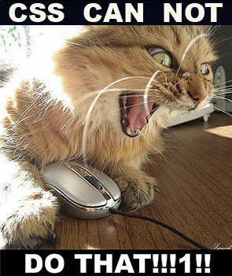
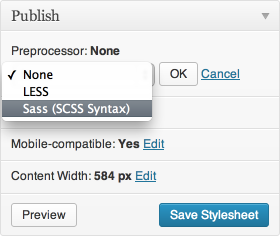

Pre-Process All The Styles
K.Adam White
adam@kadamwhite.com • @kadamwhite
Front-End Developer • Boston WP Co-Organizer
CSS3 Made Stylesheets Awesome
But You Deserve Better Than This
.box_round {
-webkit-border-radius: 12px;
border-radius: 12px;
-webkit-background-clip: padding-box; background-clip: padding-box;
}
.box_shadow {
-webkit-box-shadow: 0px 0px 4px 0px #ffffff;
box-shadow: 0px 0px 4px 0px #ffffff;
}
.box_gradient {
background-color: #444444;
background-image: -webkit-gradient(linear, left top, left bottom, from(#444444), to(#999999));
background-image: -webkit-linear-gradient(top, #444444, #999999);
background-image: -moz-linear-gradient(top, #444444, #999999);
background-image: -o-linear-gradient(top, #444444, #999999);
background-image: linear-gradient(to bottom, #444444, #999999);
}
.box_rgba {
background-color: transparent;
background-color: rgba(180, 180, 144, 0.6);
}
.box_rotate {
-webkit-transform: rotate(7.5deg);
-moz-transform: rotate(7.5deg);
-ms-transform: rotate(7.5deg);
-o-transform: rotate(7.5deg);
transform: rotate(7.5deg);
}
.box_scale {
-webkit-transform: scale(0.8);
-moz-transform: scale(0.8);
-ms-transform: scale(0.8);
-o-transform: scale(0.8);
transform: scale(0.8);
}
.box_3dtransforms {
-webkit-perspective: 300px;
-moz-perspective: 300px;
-ms-perspective: 300px;
perspective: 300px;
-webkit-transform: rotateY(180deg); -webkit-transform-style: preserve-3d;
-moz-transform: rotateY(180deg); -moz-transform-style: preserve-3d;
-ms-transform: rotateY(180deg); -ms-transform-style: preserve-3d;
transform: rotateY(180deg); transform-style: preserve-3d;
}
.box_transition {
-webkit-transition: all 0.3s ease-out;
-moz-transition: all 0.3s ease-out;
-o-transition: all 0.3s ease-out;
transition: all 0.3s ease-out;
}
.box_textshadow {
text-shadow: 1px 1px 3px #888;
}
.box_opacity {
opacity: 0.9;
}
* {
-webkit-box-sizing: border-box;
-moz-box-sizing: border-box;
box-sizing: border-box;
}
.box_bgsize {
-webkit-background-size: 100% 100%;
background-size: 100% 100%;
}
.box_columns {
-webkit-column-count: 2; -webkit-column-gap: 15px; /* Chrome, Safari 3
-moz-column-count: 2; -moz-column-gap: 15px; /* Firefox 3.5+
column-count: 2; column-gap: 15px; /* Opera 11+
}
.box_animation:hover {
-webkit-animation: myanim 5s infinite;
-moz-animation: myanim 5s infinite;
-o-animation: myanim 5s infinite;
animation: myanim 5s infinite;
}
@-webkit-keyframes myanim {
0% { opacity: 0.0; }
50% { opacity: 0.5; }
100% { opacity: 1.0; }
}
@-moz-keyframes myanim {
0% { opacity: 0.0; }
50% { opacity: 0.5; }
100% { opacity: 1.0; }
}
@-o-keyframes myanim {
0% { opacity: 0.0; }
50% { opacity: 0.5; }
100% { opacity: 1.0; }
}
@keyframes myanim {
0% { opacity: 0.0; }
50% { opacity: 0.5; }
100% { opacity: 1.0; }
}
Source: CSS3Please.com
What's a CSS Pre-Processor?
Compiles to CSS
Write PHP → Renders as normal HTML
Write using a preprocessor → Renders as normal CSS

|
||
A Little History
SASS
- “Syntactically Awesome StyleSheets”
- Born from Haml, and written in Ruby
- Stricter syntax than CSS:
$blue: #3bbfce
.content-navigation
border-color: $blue
color: darken($blue, 9%)
LESS
- “Meta-language”: CSS is valid LESS by default
- Originally in Ruby, now uses JavaScript: can run in the browser or on the command line with Node
- LESS Homepage
- LESS on Github
@blue: #3bbfce;
.content-navigation {
border-color: @blue;
color: darken( @blue, 9% );
}
SCSS
- “Sassy CSS” (SCSS) syntax introduced in v3 to make syntax a meta-set of CSS
- Sass Homepage
- Sass on Github
$blue: #3bbfce;
.content-navigation {
border-color: $blue;
color: darken( $blue, 9% );
}
Stylus
- Colons, semi-colons, brackets? All optional
- Also uses Node.js
- Stylus syntax comparison
- Stylus Homepage
- Stylus on Github
blue = #3bbfce
.content-navigation
border-color blue
color darken(blue, 30%)
We're not going to talk about Stylus
(Sorry)
What They Do
Gradients: CSS
.box_gradient {
background-color: #444444;
background-image: -webkit-gradient( linear, left top, left bottom, from( #444444 ), to( #999999 ) );
background-image: -webkit-linear-gradient( top, #444444, #999999 );
background-image: -moz-linear-gradient( top, #444444, #999999 );
background-image: -o-linear-gradient( top, #444444, #999999 );
background-image: linear-gradient( to bottom, #444444, #999999 );
}
Gradients: LESS & SCSS
LESS
.widget {
.gradient( #444444, #999999 );
}
SCSS with Compass
.widget {
@include background( linear-gradient( top, #444444, #999999 ) );
}
How? With "Mixins" (Functions)
.gradient( @from, @to ) {
background-color: @from;
background-image: -webkit-gradient( linear, left top, left bottom, from( @from ), to( @to ) );
background-image: -webkit-linear-gradient( top, @from, @to );
background-image: -moz-linear-gradient( top, @from, @to );
background-image: -o-linear-gradient( top, @from, @to );
background-image: linear-gradient( to bottom, @from, @to );
}
Also, Variables and Color Functions
@primary-color: red;
@link-color: @primary-color;
@link-active: spin( @primary-color, 180 );
@link-hover: darken( @link-color, 20% );
@link-visited: greyscale( @link-color );
@background-color: contrast( @color1, [@darkcolor: black], [@lightcolor: white], [@threshold: 43%] );
Further reading:
But Wait, There's More!
Nesting & Inheritance
Functions & Math
Better Importing & Code Organization
How You Use Them
Don't Fear the Command Line
LESS runs in Node.js:
npm install -g less
lessc styles.less styles.css
Sass runs in Ruby:
gem install sass
mv style.css style.scss
sass --watch style.scss:style.css
(Aside: Grunt)
Task-based build tool for Node
Works with every major pre-processor
Way out-of-scope for this talk :)
GUI Apps

Other GUI Apps
LESS
Sass & Compass
Jetpack
Sass & LESS support added in December
Use Within Your Theme
Use WordPress-specific wrappers for scssphp and lessphp to directly enqueue .scss or .less files
(My favorite workflow)
So... Which One Should I Use?
“Really short answer: Sass”
– Chris Coyier at CSS Tricks, in Sass vs. LESS
Sass is more powerful and more extensible, with placeholder selectors, @extend, Compass
LESS also had a brief crisis of momentum where development stalled
But Seriously, Just Pick One
“The best CSS pre-processor is the one you have with you”
Neither LESS nor Sass are going anywhere
Either will make your life as a web designer better
Other Comparisons
Sass/LESS Comparison by Sass creator Chris Eppstein
Sass vs. LESS vs. Stylus: Preprocessor Shootout at Net Tuts+
Too LESS? Should You Be Using Sass? by Ken Collins on metaskills.net
An Introduction to LESS, and Comparison to Sass by Jeremy Hixon for Smashing Mag
Why I Switched from LESS to Sass by Hugo Giraudel
Add-On Libraries
Excellent resources are available to provide pre-packaged functionality and utilities to make writing CSS meta-languages like LESS and SCSS even easier:
Compass (Sass/SCSS)
LESS Elements (LESS)
Nib (Stylus)
Best Practices & "Gotcha's"
Nesting

Sample File Organization in LESS
@import "_normalize.less"; // Import Normalize
@import "_mixins.less"; // MIXINS & VARIABLES
@import "_base.less"; // BASE (MOBILE) SIZE
@media only screen and (min-width: 481px) {
@import "_481up.less"; // LARGER MOBILE DEVICES
}
@media only screen and (min-width: 768px) {
@import "_grid.less";
@import "_768up.less"; // TABLET & SMALLER LAPTOPS
}
@media only screen and (min-width: 1030px) {
@import "_1030up.less"; // DESKTOP
}
@media only screen and (min-width: 1240px) {
@import "_1240up.less"; // LARGE VIEWING SIZE
}
From the “Bones” WordPress Starter Theme
Modular Code
No More 10,000-Line CSS Files!
Using LESS in WordPress by Tom McFarlin
Modular Front-End Development with LESS by Delwin Campbell for Codrops
OOCSS
"Object Oriented CSS"
Strong approach to change the way you use classes for modularity and maintainability
OOCSS + Sass = The best way to CSS, by Ian Storm Taylor
An Introduction To Object Oriented CSS (OOCSS) by Louis Lazaris for Smashing Magazine
And One More Thing...
Bones-LESS and Bones-SCSS
Forks of the Bones starter theme, pre-integrated with wp-less and wp-sass
Launched today at bostonwp.github.com/bones-less and bostonwp.github.com/bones-scss
Thank You
Slides: kadamwhite.github.io/talks/2013/preprocessors
Find me @kadamwhite or at adam@kadamwhite.com
Questions?